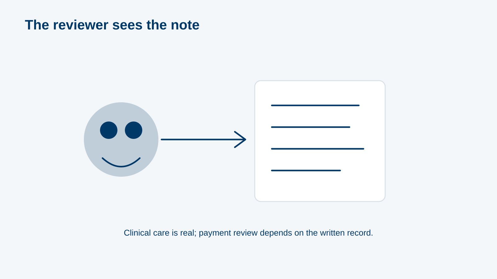
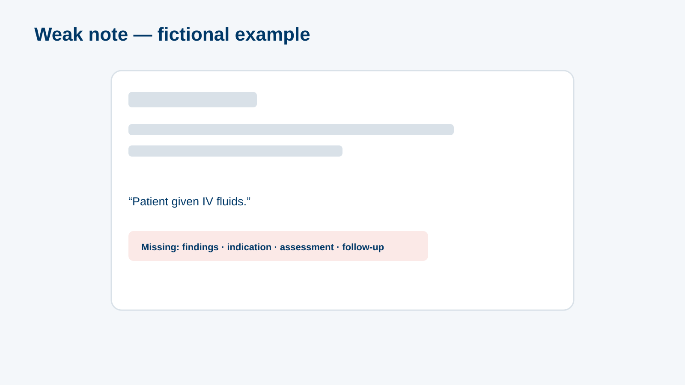
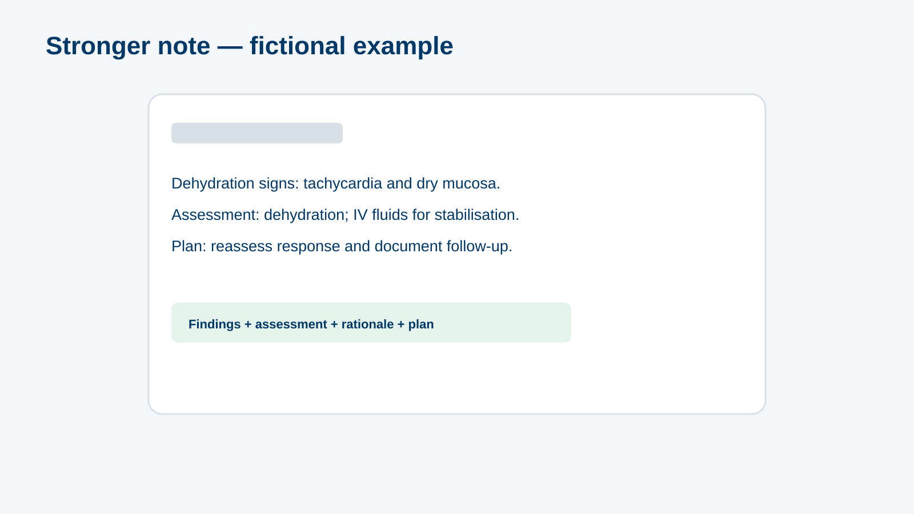

MODULE 05
RCM Part A: Documentation & Coding
~25 minutes
✦rcma-000 · L1 Title · title visual · supplied client logo and background onlyRCM Part A: Documentation & ICD-10 Coding That Gets Approved · official client logo and palette applied to every reference screen.
storyboard.md; screenshots, policy values and hotspot coordinates remain subject to the module’s source lock.MODULE 05
~25 minutes
✦rcma-000 · L1 Title · title visual · supplied client logo and background onlyL3 Content · A — Why it matters
"The payer doesn't see your patient. The payer sees your note." · Clinical decision + documentation + coding = optimised payment

rcma-001 · content_slide · visual asset: rcma-img-reviewer · screen visual reference only · inspect final responsive build before approvalL4 Question · A — Why it matters
"What do you think is the #1 cause of rejections at My Clinic?" (4 causes)
rcma-002 · poll · screen visual reference only · inspect final responsive build before approvalL3 Content · B — Documentation strategy
Always: chief complaint & HPI · relevant findings · link symptoms to the working diagnosis · labs/imaging when needed · Avoid: vague notes · diagnosis without support · …
rcma-010 · tabs · screen visual reference only · inspect final responsive build before approvalL3 Content · B — Documentation strategy
Before: "Patient given IV fluids." · After: "Dehydration signs (HR 112, dry mucosa) — IV fluids started for stabilisation." Rendered as two note cards (SVG)


rcma-011 · image_compare · visual asset: rcma-img-note-weak, rcma-img-note-strong · screen visual reference only · inspect final responsive build before approval-strongTwo identical-size EHR-style note cards (generic, no vendor UI), weak vs strong text
Draft alt: "Weak note: patient given IV fluids." / "Strong note: dehydration signs, IV fluids for stabilisation."
PENDING relevant Phase 0 and SME visual approval; provenance recorded before production.L4 Question · B — Documentation strategy
Order: Chief complaint → HPI → relevant past history → clinical findings → assessment → plan with duration & follow-up
rcma-012 · sorting · screen visual reference only · inspect final responsive build before approvalL4 Question · B — Documentation strategy
"Which note best justifies a CBC?" options: "Routine CBC" / "Fatigue" / "Fatigue for 6 weeks, pallor, menorrhagia — rule out anaemia" ✔ / "Patient requested blood test"
rcma-013 · mcq · screen visual reference only · inspect final responsive build before approvalL3 Content · C — ICD-10 coding
Primary = main condition treated · Secondary = complexity · Specific code = higher acceptance · #1 rejection cause: non-specific symptom coding
rcma-020 · content_slide · screen visual reference only · inspect final responsive build before approvalL4 Question · C — ICD-10 coding
Presentations ↔ codes (final codes per B4): "Vomiting + diarrhoea, 2 days, dehydration" ↔ gastroenteritis code · "Sore throat, fever, tonsillar exudate" ↔ J03 Acute tonsillitis · "Headache …
rcma-021 · matching · screen visual reference only · inspect final responsive build before approvalL3 Content · C — ICD-10 coding
Fever 3 days + dysuria + suprapubic pain → urinalysis and culture ordered → document a provisional diagnosis linked to the findings → confirm or change when results …
rcma-022 · worked_example · screen visual reference only · inspect final responsive build before approvalL4 Question · C — ICD-10 coding
Items: E66 Obesity (BMI 31) · L70 Acne · L66 Hair loss · L21 Seborrhoeic dermatitis · N97 Female infertility · General check-up · J03 Acute tonsillitis · …
rcma-023 · drag_drop · screen visual reference only · inspect final responsive build before approvalL3 Content · D — Defensive medicine & ordering
Follow initial work-up protocols · No supplements without indication · Repeat only at evidence-based intervals · If you deviate, document why
rcma-030 · content_slide · screen visual reference only · inspect final responsive build before approvalL5 Scenario · D — Defensive medicine & ordering
Node 1: 45-year-old with multi-joint pain, first visit, no history → order everything (CRP, ESR, anti-DNA, anti-Ro, anti-La) vs initial work-up (CRP, ESR) ✔. Node 2: same patient …
rcma-031 · decision_scenario · screen visual reference only · inspect final responsive build before approvalL4 Question · D — Defensive medicine & ordering
"Your diabetic patient's HbA1c was done 6 weeks ago. He asks for another." Best action → don't repeat yet unless there's a documented clinical reason; next test at …
rcma-032 · mcq · screen visual reference only · inspect final responsive build before approvalL4 Question · D — Defensive medicine & ordering
"Prescribing a combined multivitamin 'for general wellness' with no documented deficiency is likely to be rejected." → True (B8)
rcma-033 · true_false · screen visual reference only · inspect final responsive build before approvalL4 Question · E — Rejections & coverage
Rejection notes → causes: "No indication for the MRI" → missing justification · "Diagnosis: fever" → non-specific · "No examination findings recorded" → incomplete · "Antibiotic billed for …
rcma-040 · drag_drop · screen visual reference only · inspect final responsive build before approvalL3 Content · E — Rejections & coverage
Benefits are added and amended often · Know what's covered, adapt documentation · "If you don't document it properly, it won't be covered — even if it's clinically …
rcma-041 · content_slide · screen visual reference only · inspect final responsive build before approvalL4 Question · E — Rejections & coverage
"Which hormonal assessment is likely to be approved?" → menopausal symptoms ✔ vs PCOS work-up (B6)
rcma-042 · mcq · screen visual reference only · inspect final responsive build before approvalL5 Scenario · F — Capstone
3 invented notes, one node each: (1) "Body pain. Vit D + B12 + multivitamin." → choose the best rewrite (findings, deficiency evidence, single indicated supplement, follow-up); (2) …
rcma-050 · game · screen visual reference only · inspect final responsive build before approvalrcma-img-notes-1Invented notes in HTML (real text)
Draft alt: n/a
PENDING relevant Phase 0 and SME visual approval; provenance recorded before production.rcma-img-notes-2Invented notes in HTML (real text)
Draft alt: n/a
PENDING relevant Phase 0 and SME visual approval; provenance recorded before production.rcma-img-notes-3Invented notes in HTML (real text)
Draft alt: n/a
PENDING relevant Phase 0 and SME visual approval; provenance recorded before production.L6 Results / close · Close
rcma-o1…o5, weak below 70%
rcma-090 · results_breakdown · screen visual reference only · inspect final responsive build before approvalL6 Results / close · Close
✔ Be specific; avoid uncovered codes and combined supplements · ✔ Full data + plan with duration and outcome · ✔ Justify every service with a specific code …
rcma-091 · summary · screen visual reference only · inspect final responsive build before approval